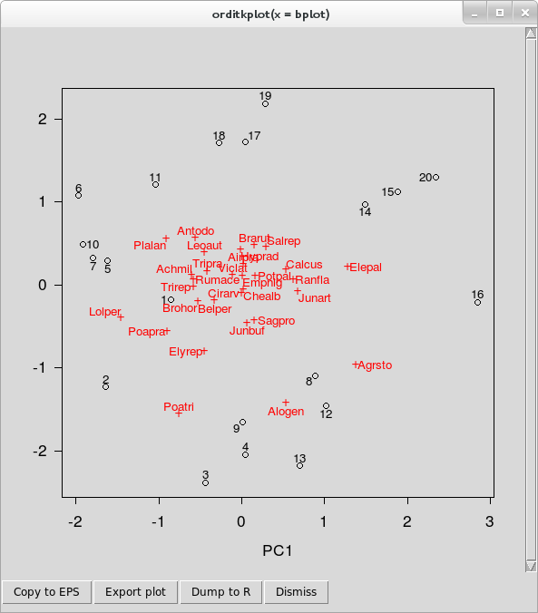
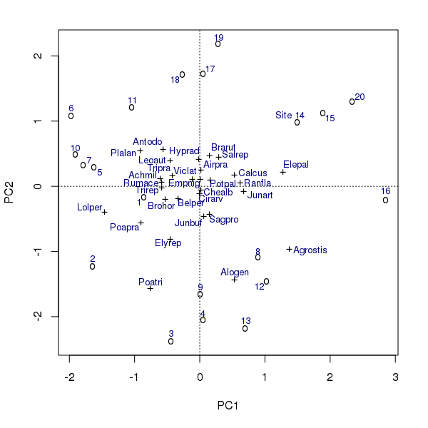

Decluttering ordination plots part 4: orditkplot()
Posted in
Tagged
Blogroll
Earlier in this series I looked at the ordilabel() and then the orditorp() functions, and most recently the ordipointlabel() function in the vegan package as means to improve labelling in ordination plots. In this, the fourth and final post in the series I take a look at orditkplot(). If you’ve created ordination diagrams before or been following the previous posts in the irregular series, you’ll have an appreciation for the problems of drawing plots that look, well, good! Without hand editing the diagrams, there is little that even ordipointlable() can do for you if you want a plot created automagically. orditkplot() sits between the automated methods for decluttering ordination plots I’ve looked at previously and hand-editing in dedicated drawing software like Inkscape or Illustrator, and allows some level of tweaking the locations of labelled points within R.
To use orditkplot(), you’ll need an R installation that can use the Tcl/Tk ecosystem. On Windows this is probably taken care of for you as part of the Windows binaries. Installing Tcl and Tk on a Linux box is pretty straight-forward. The only difficulties I have come across are with MacOS X and that is probably because I don’t own any Apple kit and haven’t used it much. To check if your R can use Tcl/Tk, run capabilities() and look for the tcltk element. on my Linux laptop I have
> capabilities()
jpeg png tiff tcltk X11 aqua http/ftp sockets
TRUE TRUE TRUE TRUE TRUE FALSE TRUE TRUE
libxml fifo cledit iconv NLS profmem cairo
TRUE TRUE TRUE TRUE TRUE FALSE TRUE
Assuming your R can use Tcl/Tk, we’ll begin.
As with the previous posts, I’ll illustrate orditkplot() through a PCA of the Dutch Dune Meadow data set distributed with vegan. Load the package and the data and fit the PCA; we will use scaling = 3 throughout
## load vegan and the data
require("vegan")
data(dune)
ord <- rda(dune) ## PCA of Dune data
scl <- 3 ## scaling = 3orditkplot() will work with any of the ordination objects in vegan, but it is best to pass it something that is reasonably close to a good-looking layout. For that, I’ll use the configuration of points and labels that ordipointlabel() achieves. Create the base plot and store the returned object
## base plot
bplot <- ordipointlabel(ord)This we pass to orditkplot()
## improve this via orditkplot
orditkplot(bplot)Note that when calling orditkplot(), you can specify a number of extra arguments that control how the configuration will be drawn on the Tk canvas, as well as pass in some graphical parameters from ?par; read ?orditkplot for details of which parameters are currently supported. Not all will affect the look of the rendered plot on the canvas but they do allow another level of control.
Hopefully you will now have a new window on screen that looks like

orditkplot()You can now move labels around on the plot and edit labels. These features are illustrated in the video below, in which I spend a few minutes editing the base plot so that there is no overlap in the labels.
- To move a label around, lift-click on the label and drag it to a new location. You’ll notice that the label is highlighted with a yellow background, and that as you move the label around, it is tethered to its score point by a thin line. This last feature allows you to move labels temporarily well out of the way whilst editing and not have to remember which labels belong to which points!
- A double left-click will bring up a small dialogue box containing the current label text, which can be edited. Hit Enter once you are happy with a label to close the dialogue and have the change reflected in the plot.
- You can use the right mouse button (or Shift + left mouse button) to drag an area to zoom to. This opens another Tk canvas which is itself a separate plot showing only the region of interest; this is an experimental feature and not all arguments are passed to the new canvas. Note that as this is a separate canvas, this feature cannot be used to temporarily zoom in to a region of the current plot to facilitate editing.
The row of buttons along the bottom of the canvas window allow you to export the current plot to one of several graphics formats, dump the plot as a new R object in your session or close the canvas window. The buttons, in order, do
The Copy to EPS button uses Tcl/Tk functions to render the plot on the canvas to an <abbr class=“initialism”, title=“Encapsulated Postscript”>EPS file. How well this works out will depend on the capabilities of your OS and the Tcl/Tk version in use. A save dialogue box will open allowing to specify a filename for the plot and where the file will be created.
Export plot takes the R representation of the current Tcl/Tk plot and plots it to one of the following devices using
plot.orditkplot(); <abbr class=“initialism”, title=“Encapsulated Postscript”>EPS, <abbr class=“initialism”, title=“Portable Document Format”>PDF, <abbr class=“initialism”, title=“Portable Network Graphics”>PNG, <abbr class=“initialism”, title=“Joint Photographic Expert Group”>JPEG, <abbr class=“initialism”, title=“Bitmap file”>BMP, <abbr class=“initialism”, title=“Tagged Image File Format”>TIFF.In addition, the plot can be exported in Xfig format via the same dialogue box. Choose the filetype wanted from the drop-down box, specify a filename and location for the saved file.
Dump to R creates an object of class
orditkplotwhich is a representation of the layout and labels on the current canvas. This is a list with componentslabelsandpoints; numeric matrices of coordinates for the centres of the labels and points respectively. If you included site and species scores in the base plot, as I did above, then these matrices contain a mixture of both scores. There is no way to directly index the species or the site scores from each matrix.parcontains relevant graphical parameters. See?parfor their meaning.argscontains vectors of other graphical parameters which control how the scores inlabelsandpointsare drawn.tcolandtcexcontrol the colour and size of the labels for example, whilstpcolandpcexdo the same for the points. This is how the distinction between species and site score points is preserved; they have different parameters controlling how they look. There are a number of other components in this list, including the axis limits.dimcontains the dimensions of the plot region, the box containing the points and labels.
All of these are sufficient to give a reasonably faithful representation of the plot as it looked on the Tcl/Tk canvas but on a R plot device. This object can be plotted via the
plot()methodplot.orditkplot(), and added to as if it were any other R plot.Dismiss closes the canvas window.
At the end of the video I used the Dump to R feature to create object bplot2, which can be plotted on a graphics device
plot(bplot2)vegan also provides methods for the points() and text() generics, allowing you to build up a plot in layers
## build up plot
plot(ord, type = "n")
points(bplot2, pch = bplot2$args$pch)
text(bplot2, cex = 0.8, col = "navy")The plot produced is shown below

points() and text() methods for class orditkplot.In the example above, note that to distinguish between the species and the sites/sample points I needed to refer to the $args$pch component of the bplot2 object. This is because
- Once the points are on the Tcl/Tk canvas the correspondence between which are sites/samples and which are species is lost, and
- The
points()method is inconsistent with theplot()method and uses the same plotting character for all points1.
There is also a scores() method if you need to extract the locations of the labels or the points in the coordinate space of the plot.
And with that, we’ve come to end of the brief tour of the tools that vegan provides to help produce ordination plots. If these don’t meet your needs, then you can export the plot as an EPS, PDF, or another vector format that can be edited in a vector drawing package like Inkscape. vegan provides lots of other functions to enhance ordination plots, and I’ll take a look at some of those next year. Use the comments to let me know if of any particular functions you’d like me to cover first.
Footnotes
Note to self: I should probably fix that…↩︎
Social